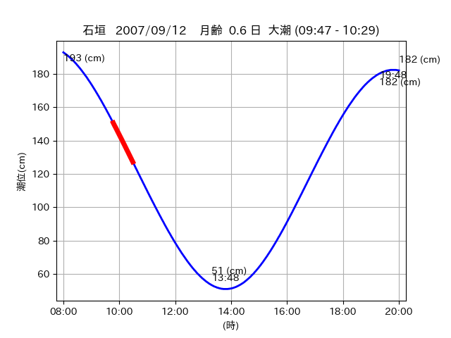
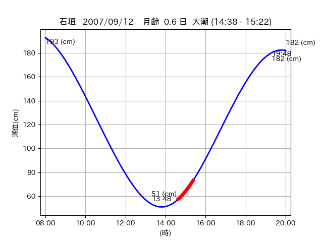

<!DOCTYPE html>
<html>
<head>
    
    <meta http-equiv="content-type" content="text/html; charset=UTF-8" />
    
        <script>
            L_NO_TOUCH = false;
            L_DISABLE_3D = false;
        </script>
    
    <style>html, body {width: 100%;height: 100%;margin: 0;padding: 0;}</style>
    <style>#map {position:absolute;top:0;bottom:0;right:0;left:0;}</style>
    <script src="https://cdn.jsdelivr.net/npm/leaflet@1.9.3/dist/leaflet.js"></script>
    <script src="https://code.jquery.com/jquery-3.7.1.min.js"></script>
    <script src="https://cdn.jsdelivr.net/npm/bootstrap@5.2.2/dist/js/bootstrap.bundle.min.js"></script>
    <script src="https://cdnjs.cloudflare.com/ajax/libs/Leaflet.awesome-markers/2.0.2/leaflet.awesome-markers.js"></script>
    <link rel="stylesheet" href="https://cdn.jsdelivr.net/npm/leaflet@1.9.3/dist/leaflet.css"/>
    <link rel="stylesheet" href="https://cdn.jsdelivr.net/npm/bootstrap@5.2.2/dist/css/bootstrap.min.css"/>
    <link rel="stylesheet" href="https://netdna.bootstrapcdn.com/bootstrap/3.0.0/css/bootstrap-glyphicons.css"/>
    <link rel="stylesheet" href="https://cdn.jsdelivr.net/npm/@fortawesome/fontawesome-free@6.2.0/css/all.min.css"/>
    <link rel="stylesheet" href="https://cdnjs.cloudflare.com/ajax/libs/Leaflet.awesome-markers/2.0.2/leaflet.awesome-markers.css"/>
    <link rel="stylesheet" href="https://cdn.jsdelivr.net/gh/python-visualization/folium/folium/templates/leaflet.awesome.rotate.min.css"/>
    
            <meta name="viewport" content="width=device-width,
                initial-scale=1.0, maximum-scale=1.0, user-scalable=no" />
            <style>
                #map_2227dcccc2c70d3b2ce0a9e7bfae7e83 {
                    position: relative;
                    width: 2048.0px;
                    height: 1600.0px;
                    left: 0.0%;
                    top: 0.0%;
                }
                .leaflet-container { font-size: 1rem; }
            </style>
        
</head>
<body>
    
    
            <div class="folium-map" id="map_2227dcccc2c70d3b2ce0a9e7bfae7e83" ></div>
        
</body>
<script>
    
    
            var map_2227dcccc2c70d3b2ce0a9e7bfae7e83 = L.map(
                "map_2227dcccc2c70d3b2ce0a9e7bfae7e83",
                {
                    center: [24.48, 124.299],
                    crs: L.CRS.EPSG3857,
                    ...{
  "zoom": 12,
  "zoomControl": true,
  "preferCanvas": false,
}

                }
            );

            

        
    
            var tile_layer_da213a2daa6471110434bfd88448462f = L.tileLayer(
                "https://cyberjapandata.gsi.go.jp/xyz/seamlessphoto/{z}/{x}/{y}.jpg",
                {
  "minZoom": 0,
  "maxZoom": 18,
  "maxNativeZoom": 18,
  "noWrap": false,
  "attribution": "\u5730\u7406\u9662\u5730\u56f3",
  "subdomains": "abc",
  "detectRetina": false,
  "tms": false,
  "opacity": 1,
}

            );
        
    
            tile_layer_da213a2daa6471110434bfd88448462f.addTo(map_2227dcccc2c70d3b2ce0a9e7bfae7e83);
        
    
            var marker_efb1e13101a88ddc2e1a7244c3609cd4 = L.marker(
                [24.5541, 124.3297],
                {
}
            ).addTo(map_2227dcccc2c70d3b2ce0a9e7bfae7e83);
        
    
            var icon_b1175a05b7cc3489240df8277eb41acc = L.AwesomeMarkers.icon(
                {
  "markerColor": "orange",
  "iconColor": "white",
  "icon": "info-sign",
  "prefix": "glyphicon",
  "extraClasses": "fa-rotate-0",
}
            );
        
    
        var popup_01ffeb7bfab7149a247d32e289f234cb = L.popup({
  "maxWidth": "100%",
});

        
            
                var html_3fde790902105c50d10f764f5528d790 = $(`<div id="html_3fde790902105c50d10f764f5528d790" style="width: 100.0%; height: 100.0%;"><table><tr><td></td></tr><tr><td><center>20070912 No.1 </center></table></td></tr></table</div>`)[0];
                popup_01ffeb7bfab7149a247d32e289f234cb.setContent(html_3fde790902105c50d10f764f5528d790);
            
        

        marker_efb1e13101a88ddc2e1a7244c3609cd4.bindPopup(popup_01ffeb7bfab7149a247d32e289f234cb)
        ;

        
    
    
                marker_efb1e13101a88ddc2e1a7244c3609cd4.setIcon(icon_b1175a05b7cc3489240df8277eb41acc);
            
    
            var poly_line_3d55ac631e4b08ce6c006b46d5662a3f = L.polyline(
                [[24.5541, 124.3297], [24.5515, 124.328]],
                {"bubblingMouseEvents": true, "color": "#00FFFF", "dashArray": null, "dashOffset": null, "fill": false, "fillColor": "#00FFFF", "fillOpacity": 0.2, "fillRule": "evenodd", "lineCap": "round", "lineJoin": "round", "noClip": false, "opacity": 1.0, "smoothFactor": 1.0, "stroke": true, "weight": 3}
            ).addTo(map_2227dcccc2c70d3b2ce0a9e7bfae7e83);
        
    
            var marker_9860b76c935168b5f70e7271341e20c9 = L.marker(
                [24.5459, 124.3208],
                {
}
            ).addTo(map_2227dcccc2c70d3b2ce0a9e7bfae7e83);
        
    
            var icon_b1442148e9c139027eb7497fcea08a2e = L.AwesomeMarkers.icon(
                {
  "markerColor": "orange",
  "iconColor": "white",
  "icon": "info-sign",
  "prefix": "glyphicon",
  "extraClasses": "fa-rotate-0",
}
            );
        
    
        var popup_cd065c58d302b7785e8a6552775fa648 = L.popup({
  "maxWidth": "100%",
});

        
            
                var html_12dc15b3d22cf2a2c48114be61e76371 = $(`<div id="html_12dc15b3d22cf2a2c48114be61e76371" style="width: 100.0%; height: 100.0%;"><table><tr><td></td></tr><tr><td><center>20070912 No.2 </center></table></td></tr></table</div>`)[0];
                popup_cd065c58d302b7785e8a6552775fa648.setContent(html_12dc15b3d22cf2a2c48114be61e76371);
            
        

        marker_9860b76c935168b5f70e7271341e20c9.bindPopup(popup_cd065c58d302b7785e8a6552775fa648)
        ;

        
    
    
                marker_9860b76c935168b5f70e7271341e20c9.setIcon(icon_b1442148e9c139027eb7497fcea08a2e);
            
    
            var poly_line_4d9ff82da10fe9946d2371e87c4b2361 = L.polyline(
                [[24.5459, 124.3208], [24.5384, 124.3173]],
                {"bubblingMouseEvents": true, "color": "#00FFFF", "dashArray": null, "dashOffset": null, "fill": false, "fillColor": "#00FFFF", "fillOpacity": 0.2, "fillRule": "evenodd", "lineCap": "round", "lineJoin": "round", "noClip": false, "opacity": 1.0, "smoothFactor": 1.0, "stroke": true, "weight": 3}
            ).addTo(map_2227dcccc2c70d3b2ce0a9e7bfae7e83);
        
    
            var marker_09baefc1561a9c485dd7ac46819bc501 = L.marker(
                [24.484, 124.2996],
                {
}
            ).addTo(map_2227dcccc2c70d3b2ce0a9e7bfae7e83);
        
    
            var icon_87e0cb16bfa007c756778b2e41d1a591 = L.AwesomeMarkers.icon(
                {
  "markerColor": "orange",
  "iconColor": "white",
  "icon": "info-sign",
  "prefix": "glyphicon",
  "extraClasses": "fa-rotate-0",
}
            );
        
    
        var popup_15d5175a691555306a4d02755aeee43a = L.popup({
  "maxWidth": "100%",
});

        
            
                var html_7d651ef86ac5a5e1bd4076ae368ab613 = $(`<div id="html_7d651ef86ac5a5e1bd4076ae368ab613" style="width: 100.0%; height: 100.0%;"><table><tr><td></td></tr><tr><td><center>20070912 No.3 </center></table></td></tr></table</div>`)[0];
                popup_15d5175a691555306a4d02755aeee43a.setContent(html_7d651ef86ac5a5e1bd4076ae368ab613);
            
        

        marker_09baefc1561a9c485dd7ac46819bc501.bindPopup(popup_15d5175a691555306a4d02755aeee43a)
        ;

        
    
    
                marker_09baefc1561a9c485dd7ac46819bc501.setIcon(icon_87e0cb16bfa007c756778b2e41d1a591);
            
    
            var poly_line_59baeec419eaedd4d701856ec1e3ce63 = L.polyline(
                [[24.484, 124.2996], [24.4749, 124.2982]],
                {"bubblingMouseEvents": true, "color": "#00FFFF", "dashArray": null, "dashOffset": null, "fill": false, "fillColor": "#00FFFF", "fillOpacity": 0.2, "fillRule": "evenodd", "lineCap": "round", "lineJoin": "round", "noClip": false, "opacity": 1.0, "smoothFactor": 1.0, "stroke": true, "weight": 3}
            ).addTo(map_2227dcccc2c70d3b2ce0a9e7bfae7e83);
        
    
            var marker_2b23b7f9ef3270f3ed893bb8a27d46ec = L.marker(
                [24.4795, 124.2987],
                {
}
            ).addTo(map_2227dcccc2c70d3b2ce0a9e7bfae7e83);
        
    
            var icon_e62b94cc462eaf76349d8bb24cae2a6a = L.AwesomeMarkers.icon(
                {
  "markerColor": "orange",
  "iconColor": "white",
  "icon": "info-sign",
  "prefix": "glyphicon",
  "extraClasses": "fa-rotate-0",
}
            );
        
    
        var popup_1508f23c247dec6a5ab8862393de015d = L.popup({
  "maxWidth": "100%",
});

        
            
                var html_90781ad4a7006742512cf6f8f72521e3 = $(`<div id="html_90781ad4a7006742512cf6f8f72521e3" style="width: 100.0%; height: 100.0%;"><table><tr><td></td></tr><tr><td><center>20070912 No.4 </center></table></td></tr></table</div>`)[0];
                popup_1508f23c247dec6a5ab8862393de015d.setContent(html_90781ad4a7006742512cf6f8f72521e3);
            
        

        marker_2b23b7f9ef3270f3ed893bb8a27d46ec.bindPopup(popup_1508f23c247dec6a5ab8862393de015d)
        ;

        
    
    
                marker_2b23b7f9ef3270f3ed893bb8a27d46ec.setIcon(icon_e62b94cc462eaf76349d8bb24cae2a6a);
            
    
            var poly_line_55fe04675370a0bb530f3722fba7334c = L.polyline(
                [[24.4795, 124.2987], [24.4808, 124.2989]],
                {"bubblingMouseEvents": true, "color": "#FF00FF", "dashArray": null, "dashOffset": null, "fill": false, "fillColor": "#FF00FF", "fillOpacity": 0.2, "fillRule": "evenodd", "lineCap": "round", "lineJoin": "round", "noClip": false, "opacity": 1.0, "smoothFactor": 1.0, "stroke": true, "weight": 3}
            ).addTo(map_2227dcccc2c70d3b2ce0a9e7bfae7e83);
        
</script>
</html>